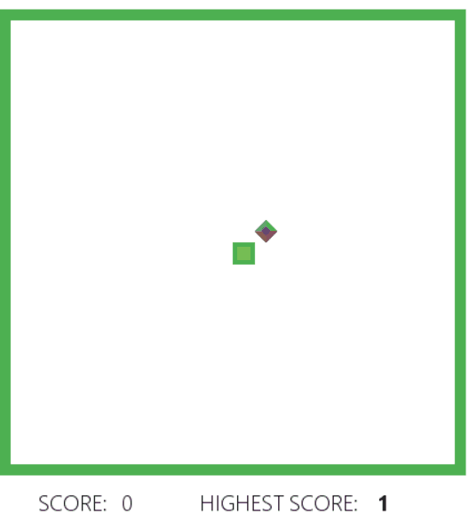
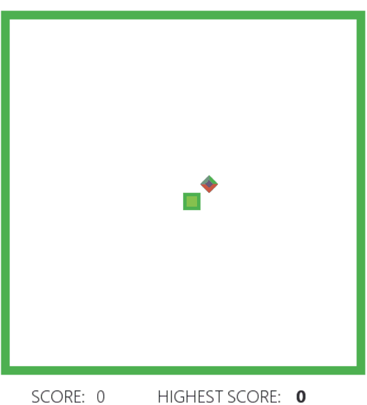

Deep Reinforcement Learning for Game Bot

Introduction
The goal of this project is to develop a AI Bot able to learn how to play the popular game Snake from scratch. In order to do it, I implemented a Deep Reinforcement Learning algorithm, a field of unsupervised Machine Learning. This approach consists in giving the system parameters related to its state, and a positive or negative reward based on its actions. No rules about the game are given, and initially the Bot has no information on what it needs to do. The goal for the system is to figure it out and elaborate a strategy to maximize the score - or the reward.We are going to see how a Deep Q-Learning algorithm learns how to play snake, scoring up to 50 points and showing a solid strategy after only 5 minutes of training.
You can check the GitHub Repository
Check full code Here you can see the two games: on the left, the AI does not know anything about the game. On the right, the AI is trained and learnt how to play.


Learning goals
- Understand and Implement a Deep Q-Learning algorithm for optimization
- Improve the algorithm with different strategies -> Store long-term memory, Experience memory, Random actions
How does it work?
Reinforcement Learning is an approach based on Markov Decision Process to make decisions, as perfectly explained here by Andrew NG at Standford University.In my implementation, I used Deep Q-Learning instead of a traditional supervised Machine Learning approach. What's the difference? Traditional ML algorithms need to be trained with an input and a "correct answer" called target. The system will then try to learn how to predict the target according to new input. In this example, we don't know what's the best action to take at each state of the game, so a traditional approach would not be effective.
In Reinforcement Learning we pass a reward, positive or negative depending on the action the system took, and the algorithm needs to learn what actions can maximize the reward, and which need to be avoided.
To understand how the agent takes decisions, it's important to understand what a Q-Table is. A Q-table is a matrix, which correlates the state of the agent with the possible actions that the system can adopt. The values in the table are the action's probability of success, based on the rewards it got during the training.
| State | Right | Left | Up | Down |
|---|---|---|---|---|
| 1 | 0 | 0.31 | 0.12 | 0.87 |
| 2 | 0.98 | -0.12 | 0.01 | 0.14 |
| 3 | 1 | 0.10 | 0.12 | 0.31 |
| 4 | 0.19 | 0.14 | 0.87 | -0.12 |
Representation of a Q-Table

On a general level the algorithm works as follow:
- The game starts, and the Q-value is randomly initialized.
- The system gets the current state s.
- Based on s, it executes an action, randomly or based on its neural network. During the first phase of the training, the system often chooses random actions in order to maximize exploration. Later on, the system relies more and more on its neural network.
- When the AI chooses and performs the action, the system collects the reward. It now gets the new state state' and it updates its Q-value with the Bellman equation as mentioned above. Also, for each move it stores the original state, the action, the state reached after performed that action, the reward obtained and whether the game ended or not. This data is later sampled to train the neural network.
- These last two operations are repeated until a certain condition is met
State
A state is the representation of a situation in which the agent finds itself. The state represents the input of the Neural network of the AI.In our case, the state is an array containing 11 boolean variables. It takes into account:
- if there's an immediate danger in the snake's proximity (right, left and straight).
- if the snake is moving up, down, left or right.
- if the food is above, below, on the left or on the right.
Loss
The Deep neural network optimizes the answer (action) to a specific input (state) trying to maximize the reward. The value to express how good is the prediction is called Loss. The job of a neural network is to minimize the loss, reducing then the difference between the real target and the predicted one. In our case, the loss is expressed as: $$ loss = \left( r + \gamma max_a \textcolor{red}{\hat{Q}}(s, a') - \textcolor{red}{Q}(s, a) \right)^2 $$Reward
As said, the AI tries to maximize the reward. The only reward given to the system is when it eats the food target (+10). If the snake hits a wall or hits itself, the reward is negative (-10). Additionally, there could be given a positive reward for each step the snake takes without dying. In that case, the risk is that it prefers to run in a circle, since it gets positive rewards for each step, instead of reaching for the food.Deep Neural Network
The brain of the artificial intelligence uses Deep learning. It consists of 3 hidden layers of 120 neurons, and three Dropout layers to optimize generalization and reduce overfitting. The learning rate is not fixed, it starts at 0.0005 and decreases to 0.000005. Different architectures and different hyper-parameters contribute to a quicker convergence to an optimum, as well as possible highest scores.The network receives as input the state, and returns as output three values related to the three actions: move left, move right, move straight. The last layer uses the Softmax function to returns probabilities.

Final results
At the end of the implementation, the AI scores 40 points on average in a 20x20 game board ( Each fruit eaten rewards one point). The record is 83 points.To visualize the learning process and how effective is the approach of Deep Reinforcement Learning, I plot scores along the matches. As we can see in the graph below, during the first 50 games the AI scores poorly, less than 10 points on average. Indeed, in this phase, the system is often taking random actions, in order to explore the board and store in its memory many different states, actions, and rewards. During the last 50 games the system is not taking random actions anymore, but it only chooses what to do based on its neural network.
In only 150 games - less than 5 minutes - the system went from 0 points and no clue whatsoever on the rules to 45 points and a solid strategy!